← All workProject 2 of 7
Project 02Designed and simulated, not built
6-DOF Robotic Arm
A six-axis desktop arm designed for 3D printing: 538 mm reach, 0.5 kg design payload, my own gear and belt reductions, a 99-part Inventor assembly, dynamics and FEA.

- Reach
- 538mm
- Design payload
- 0.5kg
- Shoulder static torque SF
- 2.03
- Parts in assembly
- 99
01Overview
A desktop six-axis arm designed in Inventor around off-the-shelf actuators: NEMA17 steppers with StepperOnline planetary gearboxes at the base, shoulder and elbow, and DSSERVO digital servos at the wrist and gripper. I designed every reduction stage myself: printed involute spur gears on J1, J2, J4 and J5, and an HTD 5M belt inside the box-section upper arm for J3. The belt puts the elbow motor next to the shoulder, which takes torque off J2.
Joint angles are Inventor parameters that drive a fully constrained assembly, and each gear pinion is tied to its joint so the teeth stay in mesh at any pose. All structural parts and gears are designed to print in PA6-CF on a Bambu printer.
A later buildability check against the gearbox ratings found the 0.5 kg payload marginal at the shoulder once acceleration is included, and the elbow belt pulling too hard sideways on its gearbox shaft. Both are listed under design decisions with their fixes; the model has not been changed yet.
Tools Autodesk Inventor 2027 / Python / scikit-fem / gmsh / NumPy / Matplotlib / Bambu Studio
What I did
- Sized every joint from a Newton-Euler model built on the CAD mass properties. A grid search over the joint ranges found the worst static torque, and I checked each motor, gearbox and gear stage for torque, speed and gearbox rating.
- Modelled involute gears in Inventor and coupled each pinion to its joint through the ratio and mesh phase; interference stays at zero over a full tooth pitch on every pair.
- Validated the kinematics by driving Inventor's solver to random poses and comparing it with my Python forward kinematics, then swept every joint with interference checks to set collision-free limits.
- Ran gmsh + scikit-fem FEA on the critical printed parts. The DfAM check showed the horn bolt holes cutting into the pinion roots and high gear tooth stress, so I redesigned the gears.
Specification
- Payload / reach
- 0.5 kg; 538 mm shoulder-to-TCP at full extension, 390 mm tool-down at table height
- Link lengths
- L1 204 / L2 200 / L3 192 / wrist-to-TCP 146 mm, spherical wrist
- Mass (Inventor)
- 1.90 kg moving, 5.02 kg total incl. base
- Assembly
- 99 occurrences, 41 unique files, 193 constraints, all 0 DOF
- Actuators
- J1 17HS19-PG5, J2/J3 17HS19-PG19, J4/J5 DS3235, J6 + gripper DS3218
- Total ratios
- J1 20.7:1, J2 89.6:1, J3 57.6:1 (HTD belt), J4 1.5:1, J5 2:1, J6 1:1
- Material
- PA6-CF (links, gears), PETG (base, cover); 8 Bambu plates
02Design decisions5 changes
- 01
Belt-driven elbow to unload the shoulder
- Finding
- The shoulder (J2) is the most heavily loaded joint: 6.54 N.m worst static torque at full extension against 13.3 N.m of continuous capacity. A motor mounted at the elbow would add its own mass to the end of that lever.
- Action
- Drove the elbow (J3) through an HTD 5M belt inside the box-section upper arm, so the elbow motor sits next to the shoulder instead of out on the arm.
- Outcome
- J2 keeps a static safety factor of 2.03; the belt stage gives J3 a 57.6:1 total ratio with a 138 N tight-side load (SF 2.18).
- 02
Gears redesigned after the DfAM check
- Finding
- The design-for-printing check showed the servo-horn bolt holes cutting into the pinion roots, and tooth bending stress was the weak point of the printed gears.
- Action
- Redesigned the gears and re-checked every pair with the Lewis equation and Barth velocity factor against a 30 MPa allowable for printed PA6-CF.
- Outcome
- Lowest tooth safety factor is now 1.59 (J4, 16:24, m1.25); J2 is at 2.54.
- 03
Pinions tied to their joints
- Finding
- Joint angles are parameters that drive the whole assembly, so free-floating gears would drift out of mesh as the arm moves.
- Action
- Coupled each pinion to its joint in Inventor through the gear ratio and the mesh phase.
- Outcome
- Zero interference over a full tooth pitch on every gear pair.
- 04
Joint limits set by interference sweeps
- Finding
- Datasheet ranges say nothing about where the printed links hit each other.
- Action
- Swept every joint through its range in Inventor with interference checks at fixed poses of the other joints.
- Outcome
- Collision-free limits: J1 ±170 deg, J2 -60 to 110 deg, J3 ±100 deg, J4 and J6 ±180 deg, J5 -60 to 100 deg.
- 05
Buildability check: gearbox shafts and wrist gears
- Finding
- My first analysis checked torque but not the gearbox shaft side-load rating. The J3 belt pulls the PG19 output shaft sideways with 117-130 N against a 100 N rating. With acceleration included, J2 needs 7.06 N.m, which leaves the gearbox at SF 1.88 with 107 N of side load. The printed J4/J5 wrist gears would strip if a servo stalled (107-116 MPa tooth stress against 102 MPa UTS).
- Action
- Fixes identified: carry the J3 pulley on an outboard 608 bearing or a jackshaft; raise the J2 spur ratio or rate the arm for 0.3 kg; widen the wrist gear faces or use m1.5 teeth and run the servos at 6 V. The BOM also still needs stepper drivers, a controller, power supplies and homing switches (about $145).
- Outcome
- Open: the model has not been changed yet.
03Views8 renders

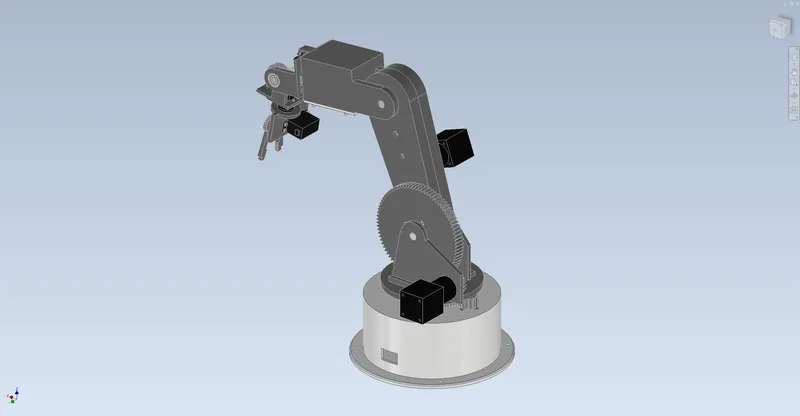

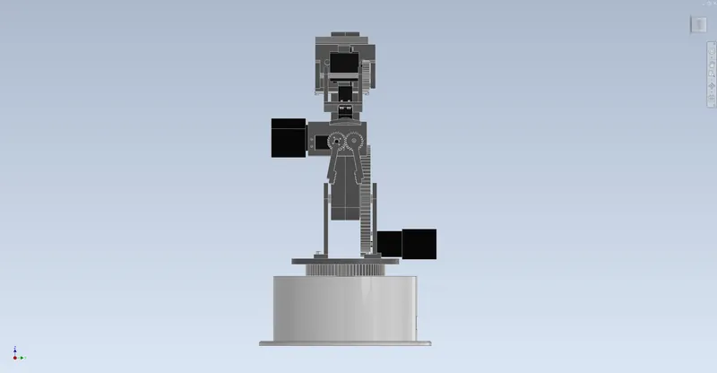

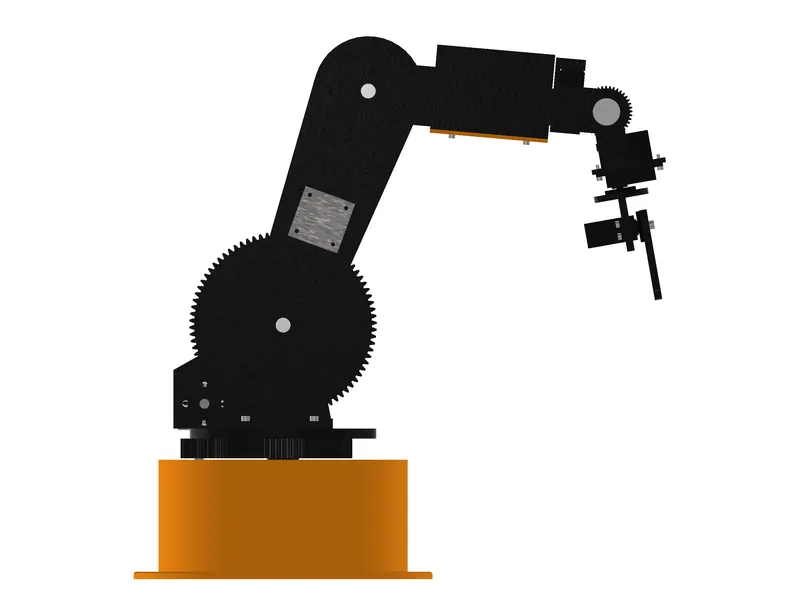

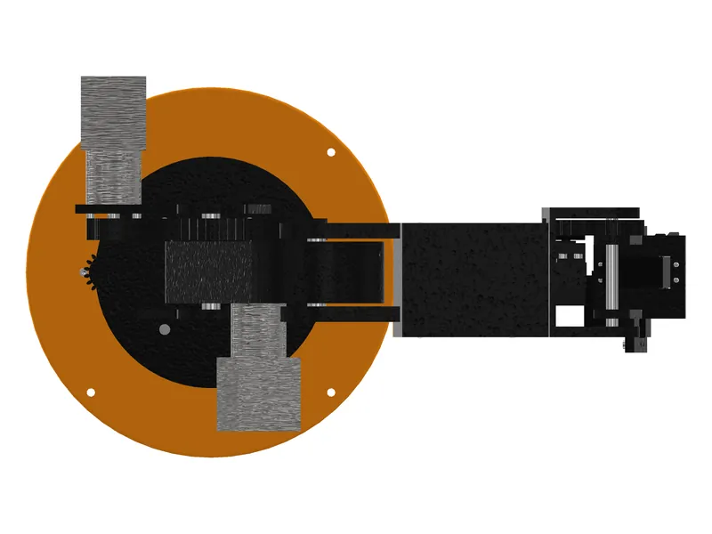

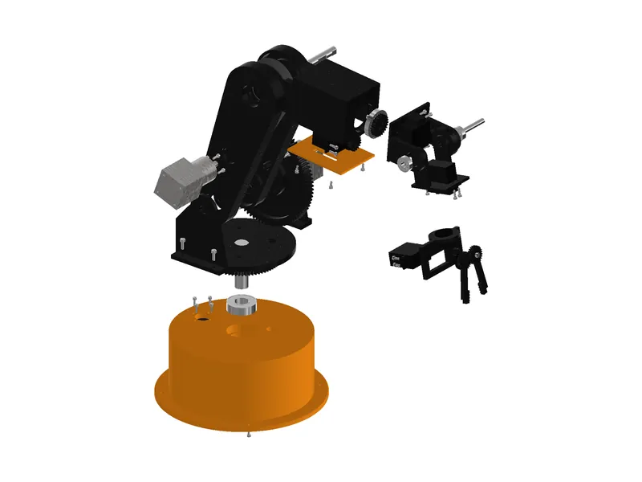

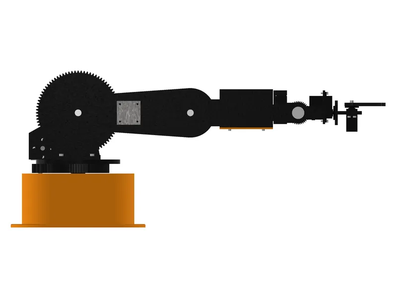

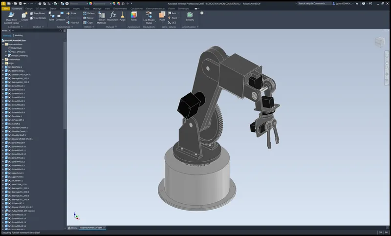
04Drawings5 sheets

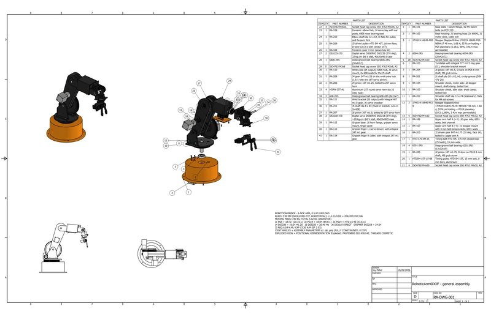

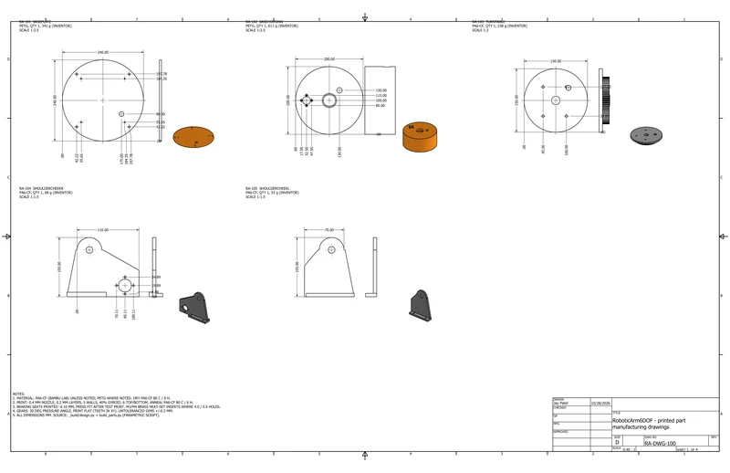

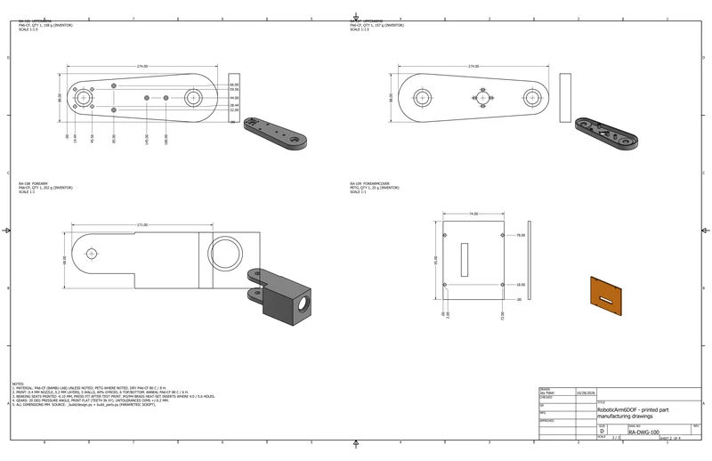

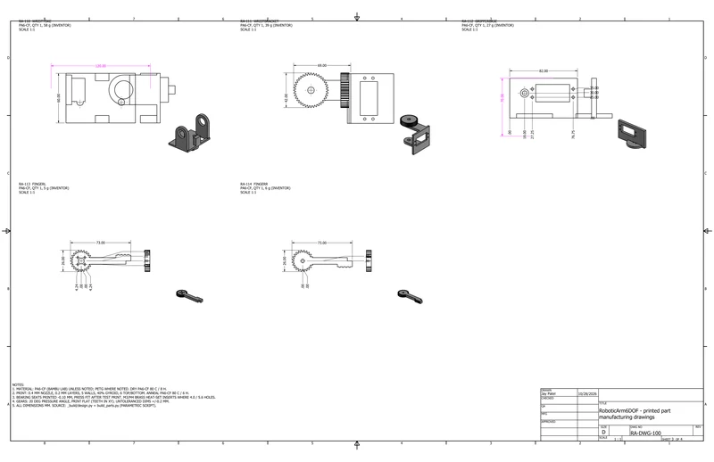

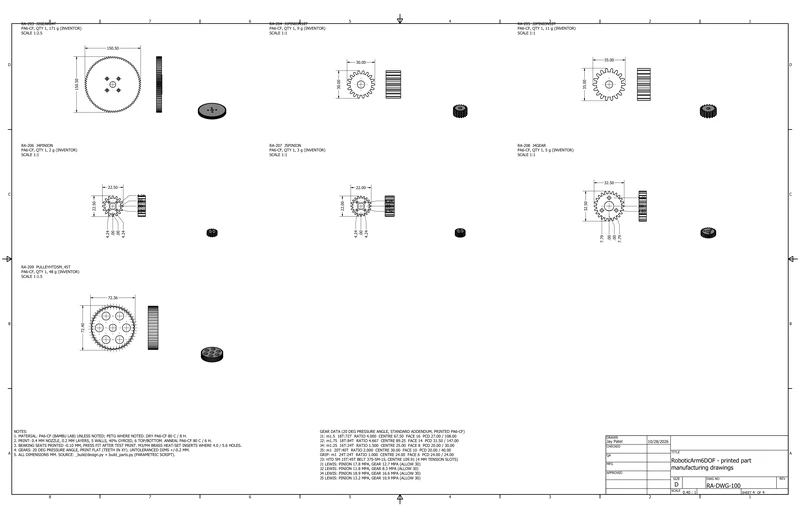
05Analysissimulated unless stated
A1 Kinematics and motion

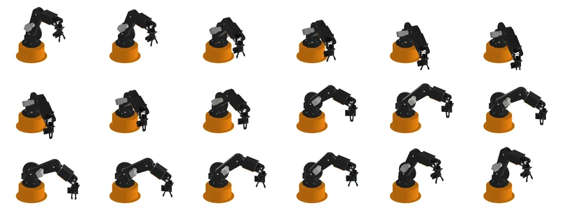

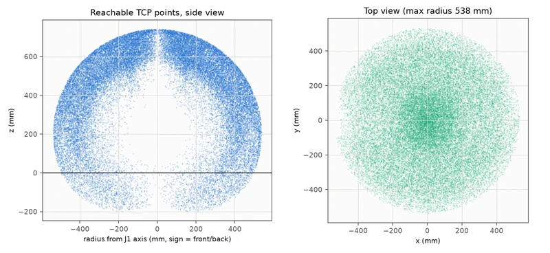

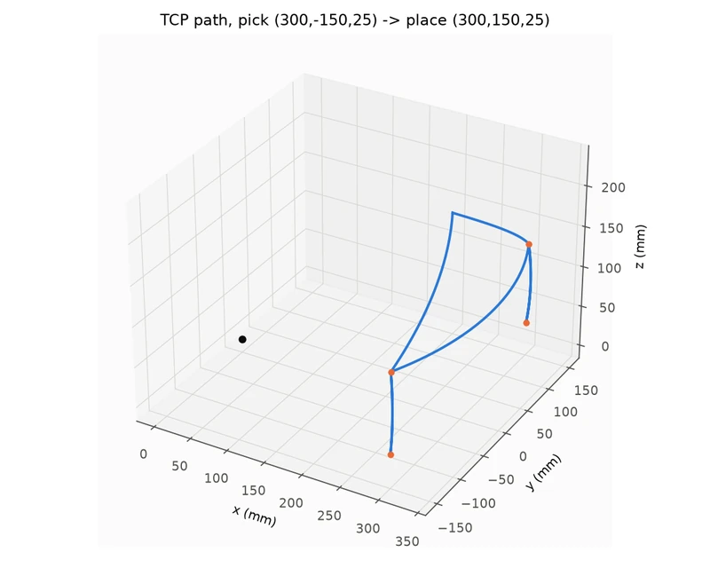
A2 Joint torque and dynamics

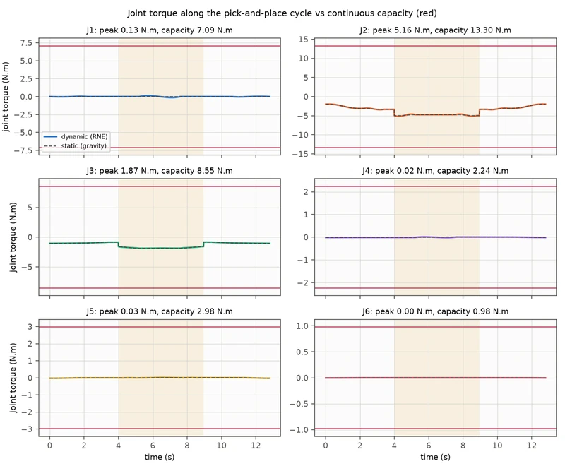

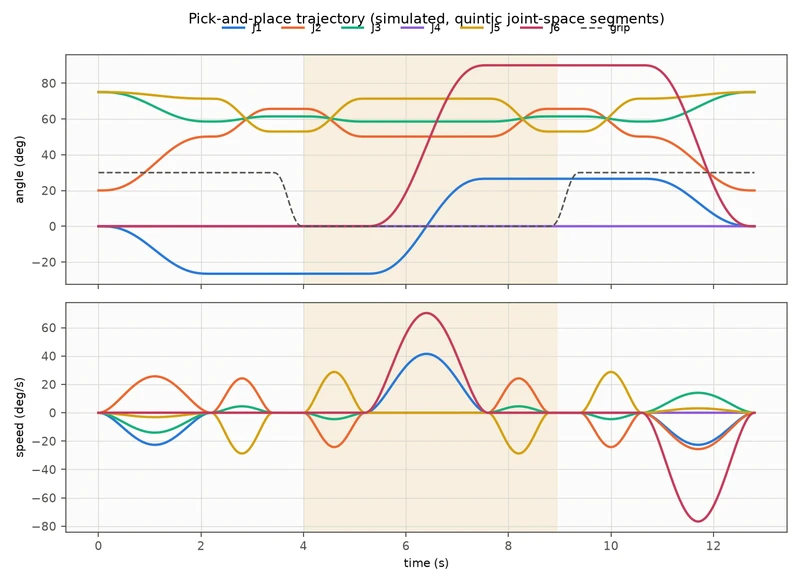

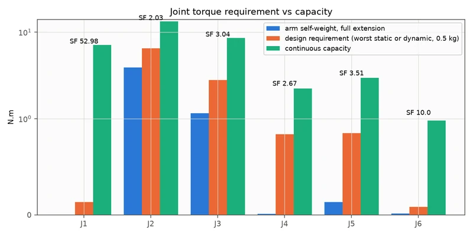

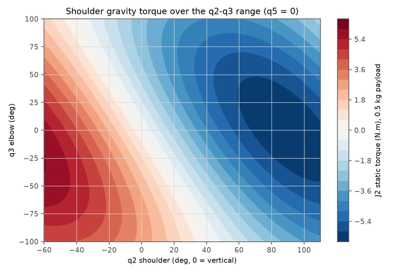
A3 Structural FEA

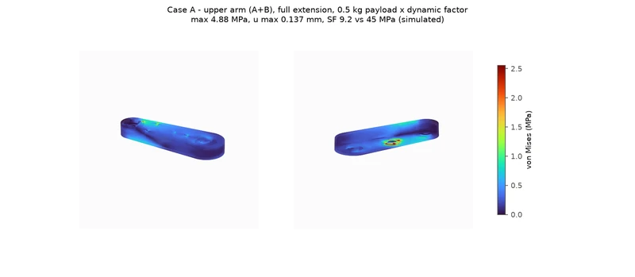

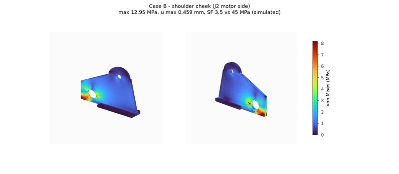

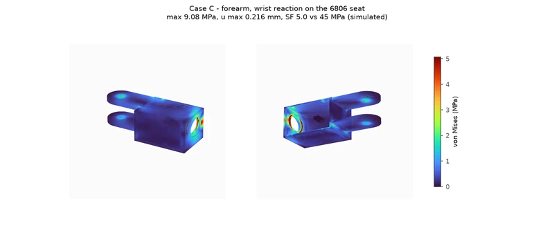
06Results11 checks
| Check | Result | Margin / status |
|---|---|---|
| Shoulder J2 worst static torque (0.5 kg, full extension) | 6.54 N.m required vs 13.3 N.m continuous capacity | SF 2.03 static; 1.88 with acceleration (gearbox-limited) |
| Elbow J3 worst static torque | 2.81 N.m vs 8.55 N.m | SF 3.04 |
| Wrist J4 / J5 worst static torque | 0.84 / 0.85 N.m vs 2.24 / 2.98 N.m | SF 2.67 / 3.51 |
| Pick-and-place cycle, Newton-Euler dynamics (12.8 s) | J2 stepper SF 4.4 at 383 rpm, gearbox at 1.16 of 3 N.m | Simulated |
| Forward kinematics, Inventor solver vs Python model | 0.00043 mm max TCP error over 11 poses | Validated in CAD |
| Interference: 5 poses, 18-frame motion study, joint sweeps | 0 clashes (only 0.001 mm3 screw tangency) | Measured in Inventor |
| FEA upper arm / shoulder cheek / forearm (x1.5 dynamic) | 4.9 / 13.0 / 9.1 MPa peak, 0.14 / 0.46 / 0.22 mm | SF 9.2 / 3.5 / 5.0 vs 45 MPa |
| Gear teeth (Lewis + Barth factor) | Lowest SF 1.59 (J4 16:24 m1.25), J2 2.54 | Simulated, 30 MPa allowable |
| Gripper and belt | 9.6 N per jaw vs 5.1 N needed (friction 0.5, so rubber pads); belt tight side 138 N | SF 1.88 / 2.18 |
| Gearbox shaft side load (buildability check) | J3 belt 117-130 N, J2 107 N vs 100 N rated | Over the rating; fix listed above |
| DfAM check (FDM, 45 deg, 1.2 mm walls) | 21/21 parts watertight, 14 print with no supports | Measured on STLs |
07Files6 downloads
- Calculation reportPDF · 1.1 MB
- Assembly drawingPDF · 373 kB
- Manufacturing drawingsPDF · 489 kB
- Bill of materialsCSV · 9 kB
- Test summaryMD · 7 kB
- Motion studyGIF · 1.8 MB

08Limits and assumptionsread before quoting a number
Everything here is calculated or simulated from the CAD model; the arm has not been built. The main assumptions are a stepper pull-out curve typical of the motor class, 50% of servo stall torque as the continuous rating, a 30 MPa allowable stress for printed gear teeth, a 300 N belt working limit, solid printed parts in the FEA, and estimated motor and gearbox masses. The calculation report lists each one.